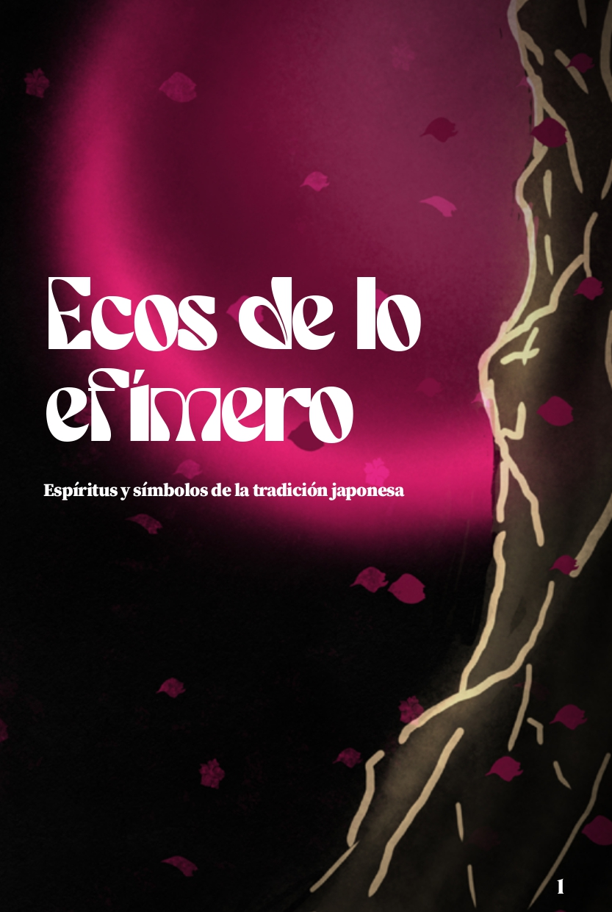
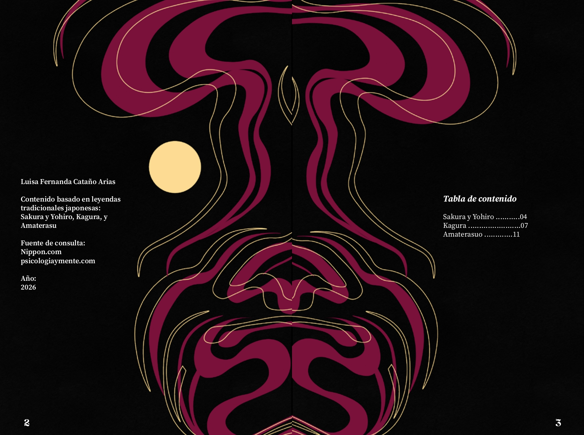
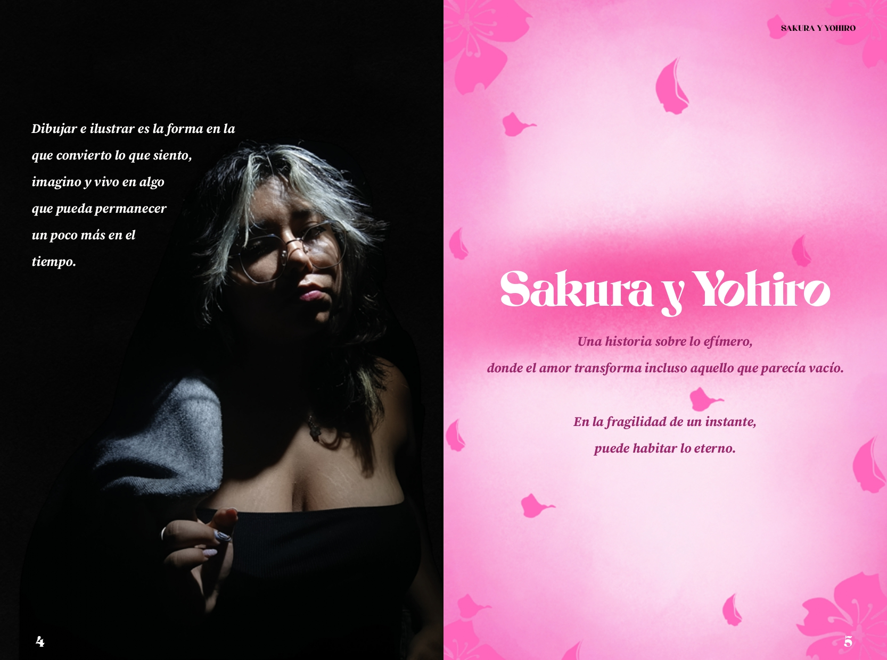
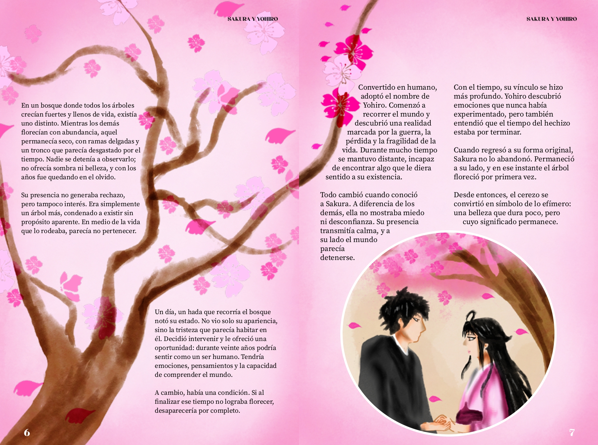
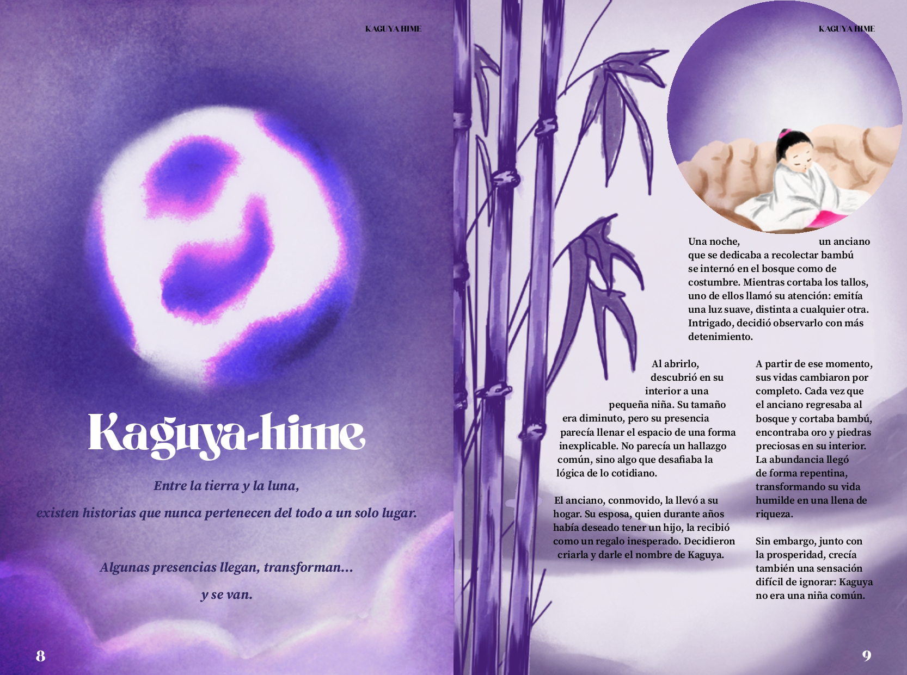
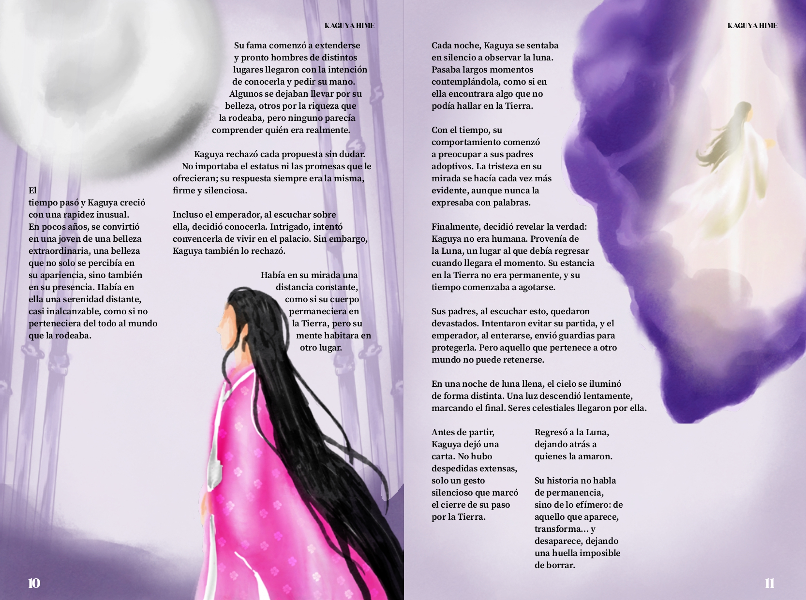
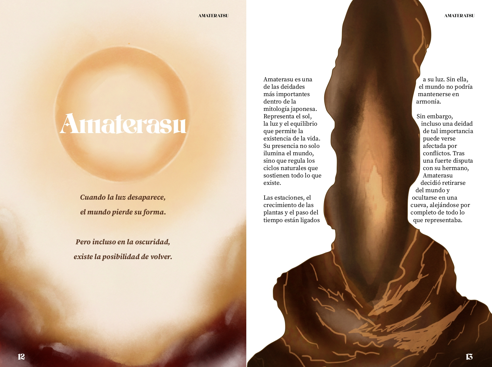
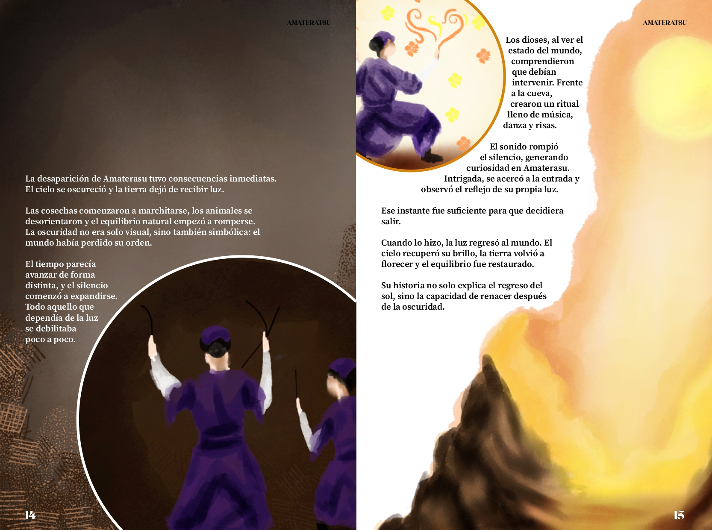
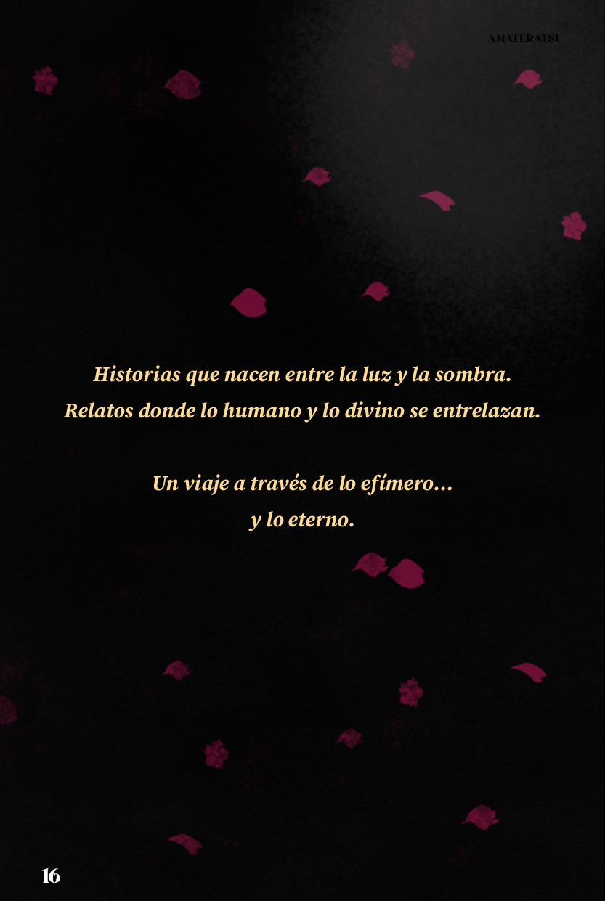

Sakura y Yohiro
Una historia sobre lo efímero, donde el amor transforma incluso aquello que parecía vacío.
En la fragilidad de un instante, puede habitar lo eterno.
Kaguya-hime
Entre la tierra y la luna, existen historias que nunca pertenecen del todo a un solo lugar.
Algunas presencias llegan, transforman… y se van.
Amaterasu
Cuando la luz desaparece, el mundo pierde su forma.
Pero incluso en la oscuridad, existe la posibilidad de volver.